Auth
Approved application · approved logoEvery image below is an actual canonical PNG. Open an image for its full resolution. These are authored design scenes, not current-app browser captures.
Sign out · done
signout-doneActions and implementation pointers
Journl · Return home · Try again
apps/web/src/components/auth/sign-in.tsxapps/web/src/components/auth/sign-up.tsxapps/web/src/components/auth/invite-code-form.tsxapps/web/src/components/auth/reset-password.tsx

SHA256 781d64b7a8f4b69a6e38ac14e3be46695380feec5fb7bab53d4bc8774f63810b

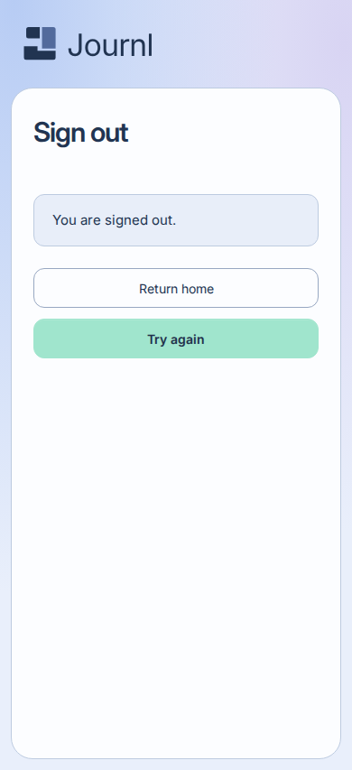
SHA256 0f4be20f4bac310e894ac53102cf3e8d71a9d78044abd4df63cd93946779449d

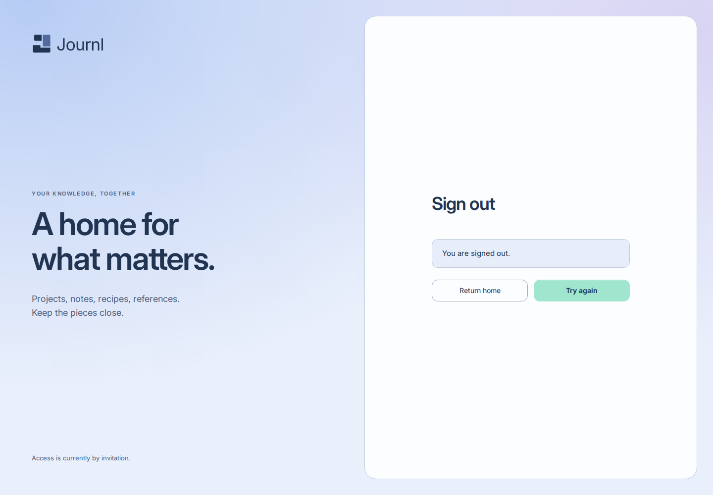
SHA256 cda4ee652b5d2a5d9250ba544549c7362b125d920bd40076faa8d744e4b10b9a

SHA256 5c5cebc2d9eb0afee8a5592e71d76c959aa38e4c341d72b8f04270385e3f4a9e
Sign out · error
signout-errorActions and implementation pointers
Journl · Return home · Try again
apps/web/src/components/auth/sign-in.tsxapps/web/src/components/auth/sign-up.tsxapps/web/src/components/auth/invite-code-form.tsxapps/web/src/components/auth/reset-password.tsx

SHA256 607b033ae0cd45d3ea33fefb9ffda6a8f1e5920d0f8aead69a1cb31798b0df3c

SHA256 fb99360250c59fc33a534cd6ea6ae1791fd9bbb4185b9f2a43a5eba118c6f025

SHA256 1e2e41b6a8eeacdae5cb18c8a439b9a2309ad1d0f682e194ba68534968ea8f24

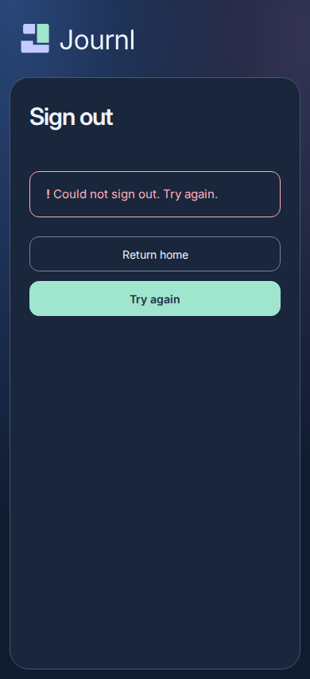
SHA256 bd2b28749f5e41e3fcfa7b75515bec857b4f71cdb2ad7196267cbeb17afd5f32
Sign in
signin-interceptedActions and implementation pointers
× · Continue with Google · Continue with GitHub · Have an invitation?
apps/web/src/components/auth/better-auth-provider.tsxapps/web/src/components/auth/invite-sign-up.tsxapps/web/src/components/auth/auth-view.tsx

SHA256 256750b0c70bf4b99549a56ee5f4825bb598acd7168ca82c35df64360860e140

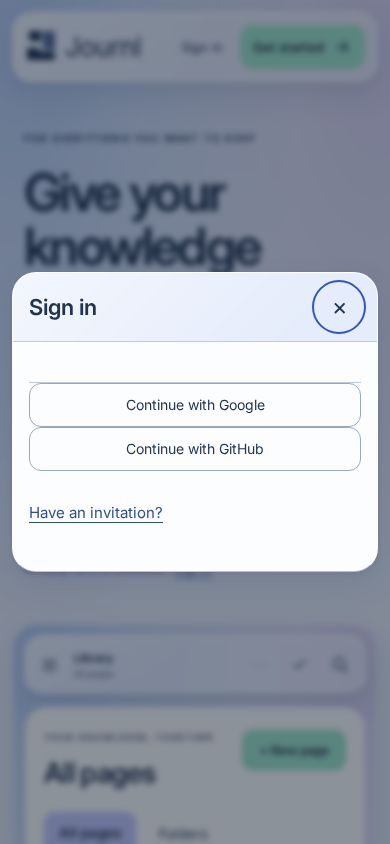
SHA256 2f6de4caa856d32e87757dce9b9b508b8ff02dc50751278b6abd7674c4cdc3fb

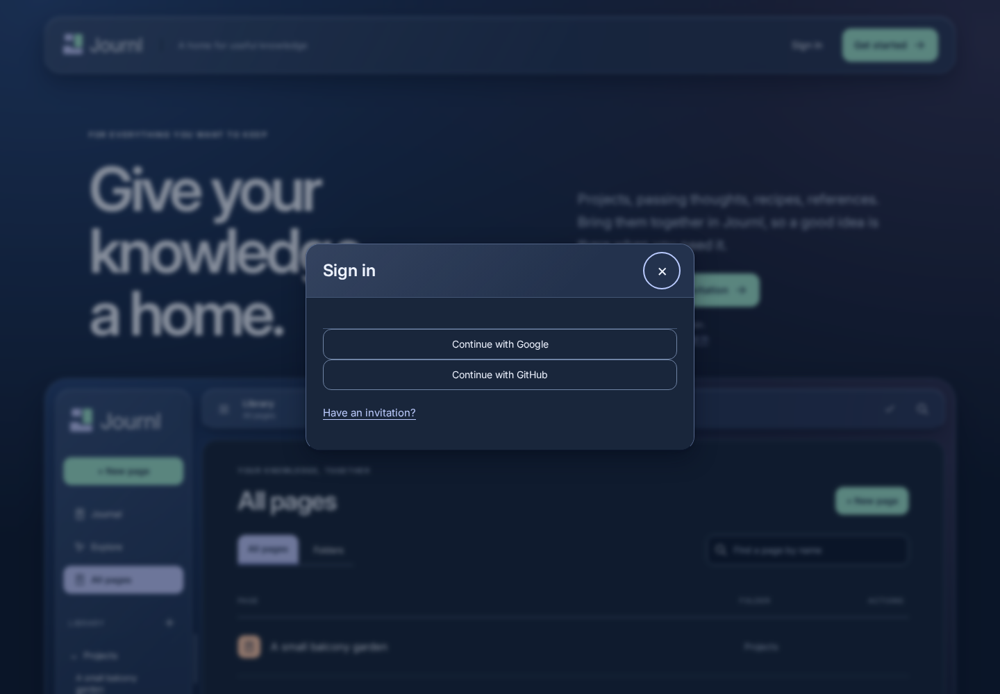
SHA256 4df3429a5ad6eafb673e52fe66fb336fa15e1d80d8733a91aa0b6b4a3c1a7020

SHA256 599c9a14eb14e797435cf8ee92c5a1fcd58fe217055ebe7b4ba8ac4a70b3a810
Create your account
signup-interceptedActions and implementation pointers
× · Continue with Google · Continue with GitHub · Already have an account? Sign in
apps/web/src/components/auth/better-auth-provider.tsxapps/web/src/components/auth/invite-sign-up.tsxapps/web/src/components/auth/auth-view.tsx

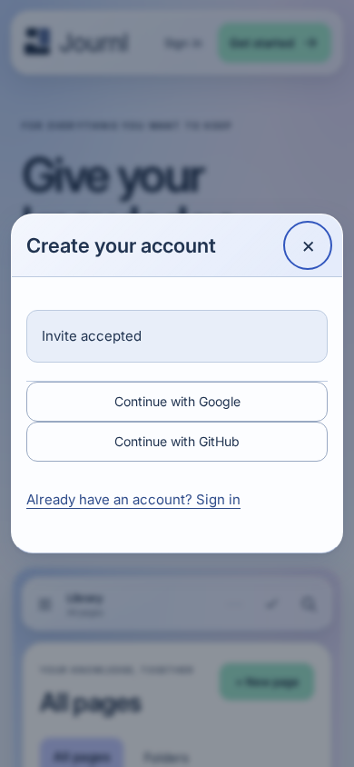
SHA256 37a29d4753521c3d31125ebb7a4e45c42f148f9682a7a46462dfe172ff0033be

SHA256 544607781cc2ad1079c984e2f26af43eea3f45a40d96a2e5ccad0071e72ad6a3

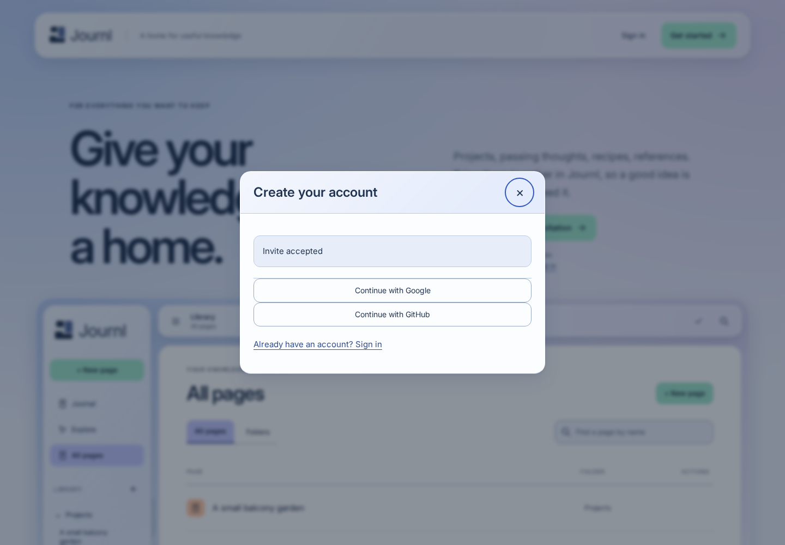
SHA256 170901303aec782b11ba6145176c04a77304149d90df62c8e5a25f38b05f797d

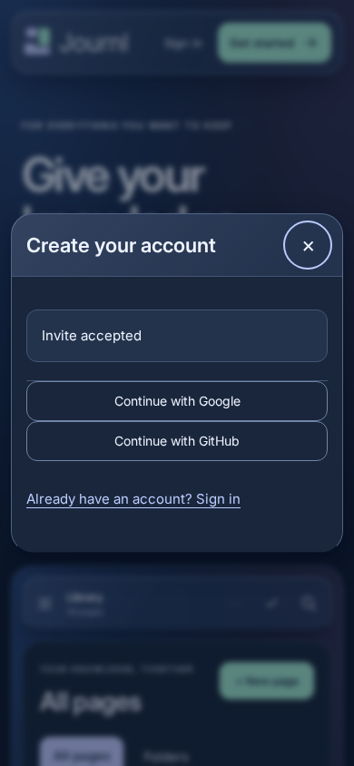
SHA256 ba167e963acb93b4db85816cc67e529250fc77fef124bb9ed8c10467c27d16b9
Enter your invitation
invite-interceptedActions and implementation pointers
× · Sign in instead · Check invite
apps/web/src/components/auth/better-auth-provider.tsxapps/web/src/components/auth/invite-sign-up.tsxapps/web/src/components/auth/auth-view.tsx

SHA256 3b80c7e3f505aaea1683009a623e2185b0985d93a45d9490bb77064c4d1feabc

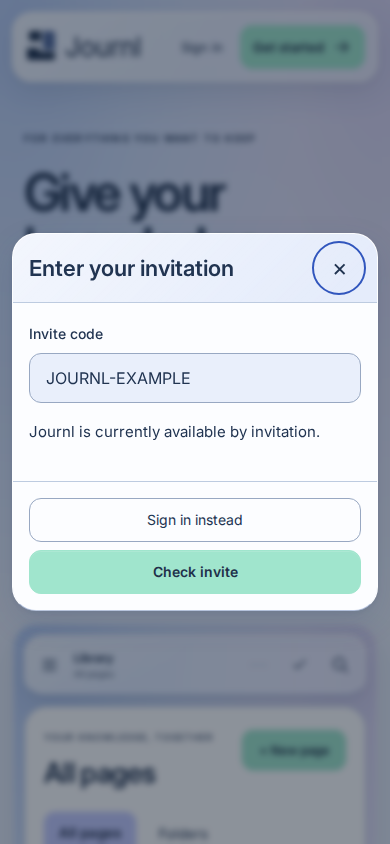
SHA256 5f6fa42b089d7b49235103882ea09efe7d4decb90ee130b51b7808923a60aea5

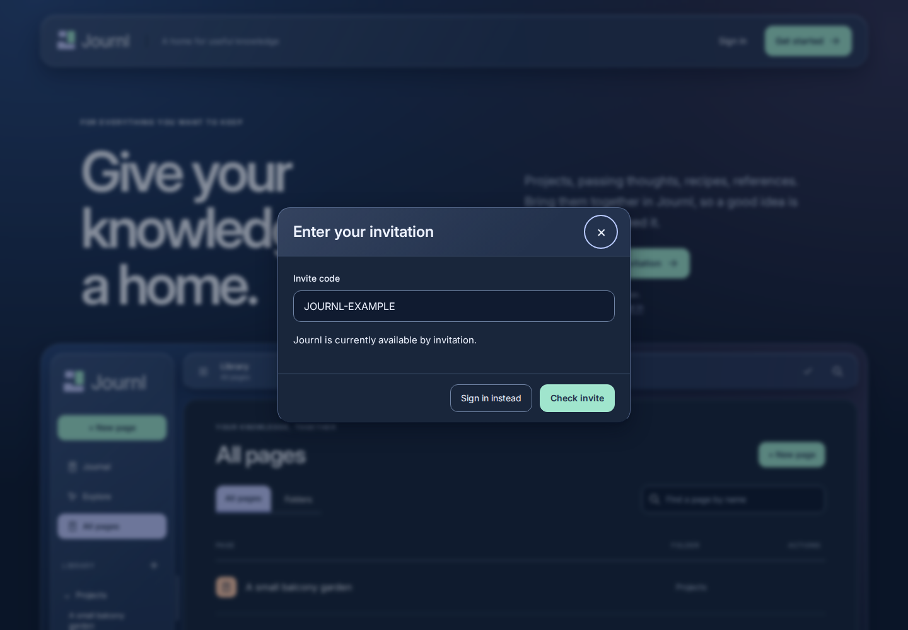
SHA256 df517a3b9d340cd0246c53ec2584fe9246780734a2c8faeb035e6d41ce97f871

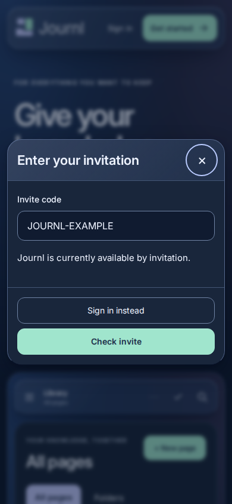
SHA256 1dc6afcf0786f8c9673948faca77fd6c7a484d9b3071256fe7a2a5ddc5abb7e7
Password sign-in · configured branch
password-sign-in-configuredActions and implementation pointers
Journl · Show password · Sign in · Forgot password? · Have an invite? · Continue with Google · Continue with GitHub
apps/web/src/components/auth/better-auth-provider.tsxapps/web/src/components/auth/invite-sign-up.tsxapps/web/src/components/auth/auth-view.tsx

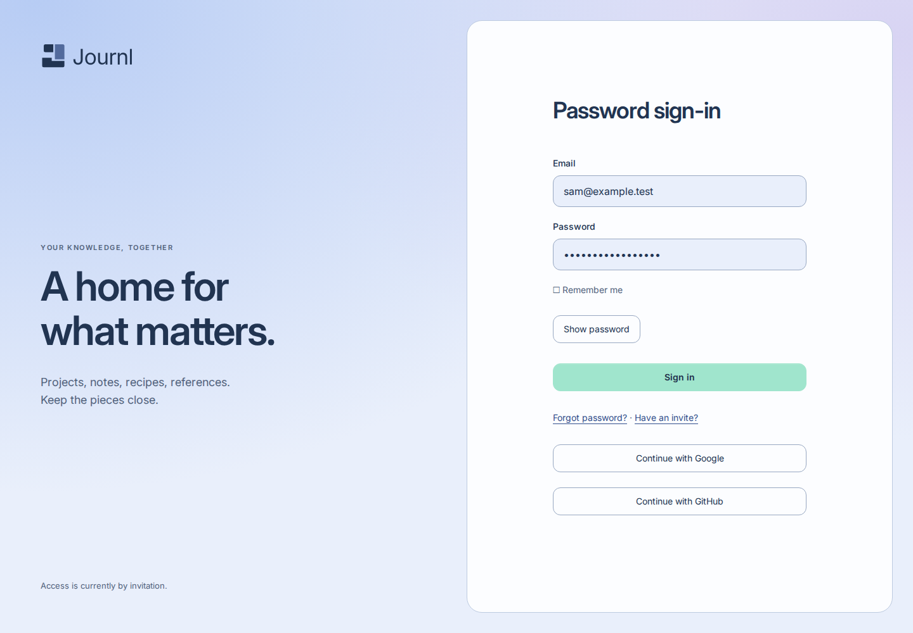
SHA256 db13b8c882df06ed9387f4bea26eec41c74a47cad893cd9203549f3a0e288132

SHA256 d44bd183b11293fee1f3e974966ed0e42e7c0f5eac37dc7a0494ad15cb2187d5

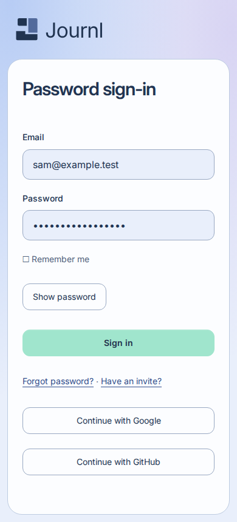
SHA256 32173050919a7480288b665c9f5ec5351801fca2d490c224b643e628d8a93bd0

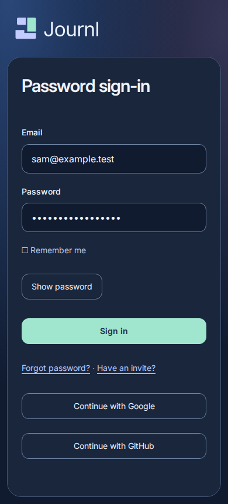
SHA256 86935923b495d8253c159a6028ec1763bec16710a5490fe94a1404e694a9074e
Password form · retained component
password-signup-componentActions and implementation pointers
Journl · Show password · Create account
apps/web/src/components/auth/better-auth-provider.tsxapps/web/src/components/auth/invite-sign-up.tsxapps/web/src/components/auth/auth-view.tsx

SHA256 cc312eb56e39050bde8a433440a54cd8e2af6cdf27a5ce4a2cdbd391fffbeb8f

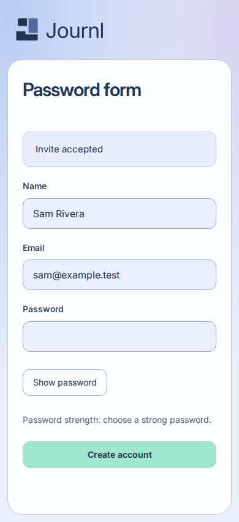
SHA256 90c074fb8f0a9a06ca8b8fa42674bdfab8b6ea487f029b8e99f68bc07f6d7f1f

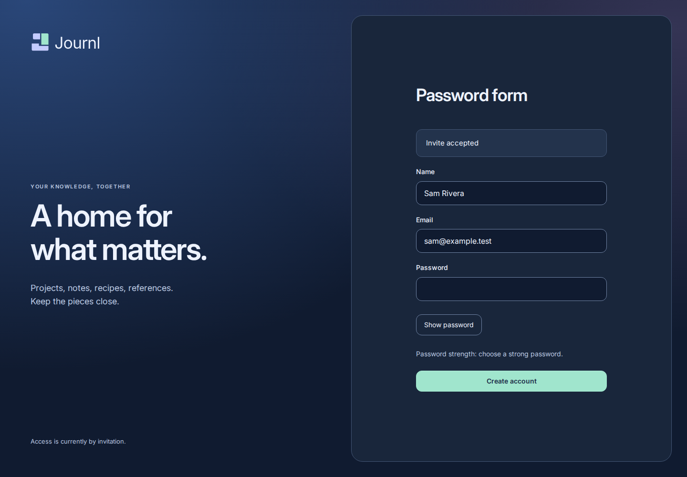
SHA256 5e090affc8ec5b0428550cc3d1f42867e6556ccd04ff30f1e76e6e30949fd866

SHA256 491a118a8f92fb54f6d32180c039265f51a29a6b1142043bc7a13883d8ad9ac6
Provider sign-in
password-sign-in-unavailableActions and implementation pointers
Journl · Continue with Google · Continue with GitHub · Have an invitation?
apps/web/src/components/auth/better-auth-provider.tsxapps/web/src/components/auth/invite-sign-up.tsxapps/web/src/components/auth/auth-view.tsx

SHA256 fc233c77cd5888305820c2d8ef53dfcbffcdc68f565b12231b2c45c1831b8873

SHA256 e1f03cb74d5c208a8c575db24885a1e1d61ac354c2ebda3df52d17bbfd0e1d96

SHA256 e9fb6ec3438e5ab6eafdab7fbf8891532a286517bda2e8839943507c0a6b7988

SHA256 27f37e714ccfbc2fb68982068eb228352a7831fa4d4687b375b86ed3ab6f66b1
Unsupported auth path · current behavior
auth-route-redirectActions and implementation pointers
Journl · Home
apps/web/src/components/auth/better-auth-provider.tsxapps/web/src/components/auth/auth-view.tsx

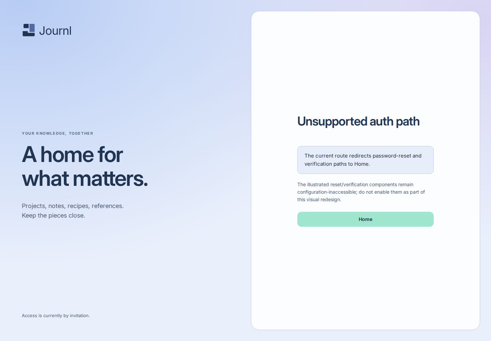
SHA256 858d8d91cab9673ffbc2dfce6442c1265f252f7467d735080b2bfb3fdaa571de

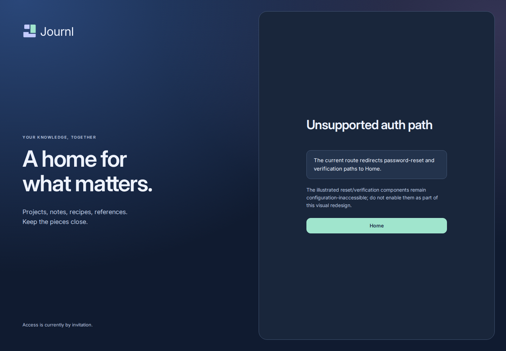
SHA256 001d04d7c6b1b2275389a6990bae857313ac117f451ec3117e2d0102e757117b

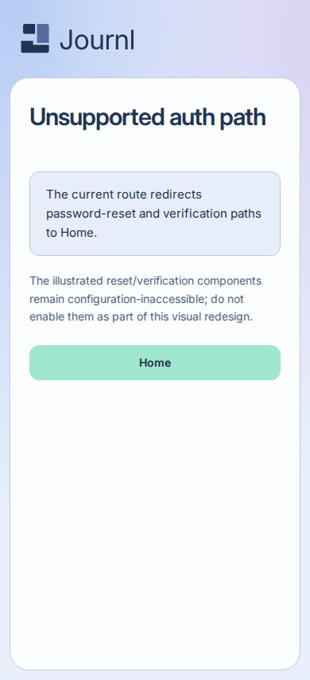
SHA256 08c367f53e4b7f3b7693b4c0749687cc89f77dc6788dbd9b11387b363c60d5fc

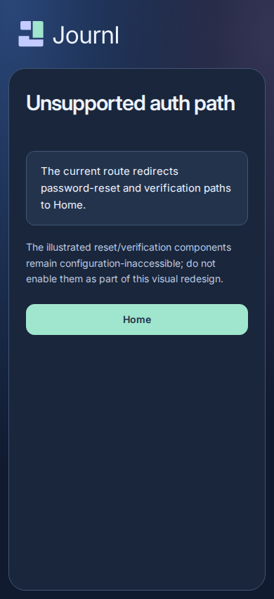
SHA256 c6f17aad8c488aac0990bc6d420ec701f8022ea03be7a4cae011165d694ccfe8